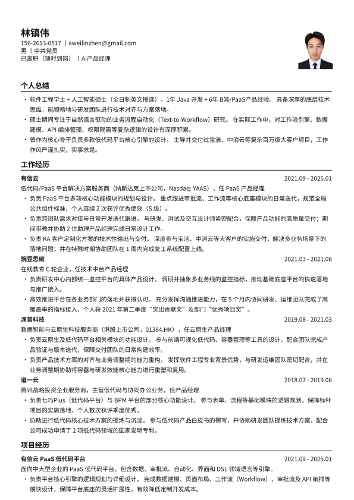

林镇伟
156-2613-0517｜aweilinzhen@gmail.com
男｜中共党员
在职｜产品经理
个人总结
- 1年Java开发、6年+产品经理经验，经历过完整的产品周期；
- 熟悉PaaS产品，如零代码/低代码平台，持续在B端产品深耕；
- 富有较强的底层逻辑思维能力，独立思考本质问题，实事求是。
工作经历
有信云 2021.09 - 至今
企业服务领域公司，主营低代码业务，现已提交纳斯达克上市申请。本人负责低代码业务，2次绩效前5%。
- PaaS产品核心负责人，包括0-1规划设计低代码平台4大核心引擎，可实施交付百万级别项目；
- 深度与服务商合作，给公司实施和服务商提供实施解答方案，共同交付宝洁和中消云等百万级项目；
- 深度参与项目实施，疫情期间主导上海复工复产项目用1周时间搭建系统上线，共助力6000+企业复工；
- 产品团队管理，先后带领2位产品经理，完成数据导入导出、打印、日志和页面布局的产品规划设计工作。
豌豆思维 2021.03 - 2021.08
在线教育C轮公司，主营数学思维、英语和画画业务。本人负责研发中心内部统一监控平台。
- 负责产品规划设计及价值指标制定等，获2021年第二季度“突出贡献奖”和部门“优秀项目奖”；
- 负责推广运营，对接5个业务部门，接入前后端应用380+，主机1000+，MySql100+，接入覆盖率达90%；
滴普科技 2019.08 - 2021.03
企业服务领域公司，主营数据、低代码和云原生业务。本人负责低代码业务，2次绩效前5%。
- 负责前端低代码和云原生产品规划设计，推广落地公司10+产品，20+项目，帮助标杆项目赢单；
- 负责官网和控制台，包括认证、安全、CMS和运营中心，推动孵化产品在官网上云，获得数百试用企业。
道一云 2018.07 - 2019.08
企业服务领域腾讯战略投资公司，主营低代码、协同办公业务。本人负责低代码业务，数次获得评优。
- 负责七巧Plus（低代码平台）0-1的产品设计，累计服务100+客户，成为公司明星级战略级产品；
- 参与道一云BPM平台0-1的设计，落地广州公共资源交易中心，后抽象能力支撑道一云七巧Plus研发；
- 编写低代码产品白皮书，帮助公司申请了2个低代码领域专利。
项目经历
有信云 PaaS低代码平台 2021.09 - 至今
该产品是面向中大型企业的PaaS低代码平台，面向群体为开发者，提供对象、审批流、自动化、界面和DSL领域语言等引擎，通过可视化拖拉拽或少量代码的方式搭建企业核心应用，打通企业内外部数据。